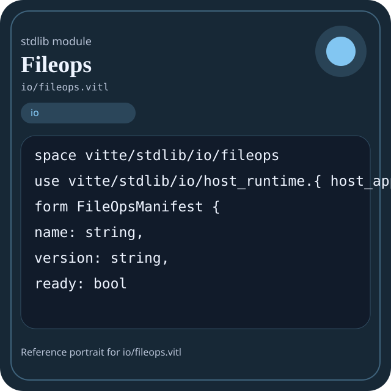

Stdlib module io/fileops.vitl
This page is a wiki-style reference for one concrete stdlib file. It explains what the file owns, where it fits in the family, and how to decide whether this is the right surface to depend on.

io/fileops.vitl.Family: io
Kind: public stdlib surface
Page style: this reference follows the same “encyclopedic card + portrait + usage contract” logic as the keyword pages, but for stdlib modules.
Summary
- Overview
- Purpose
- Taxonomy
- Implementation profile
- Top-level API inventory
- Position in family
- Declaration map
- Representative signatures
- How to use this module
- User example
- Keyword coverage
- Source shape
- Source landmarks
- Source organization
- Complete API catalog
- Integration boundaries
- Composition guidance
- Relationship table
- Neighbor modules
Overview
| Field | Value |
|---|---|
| Path | io/fileops.vitl |
| Family | io |
| Kind | public stdlib surface |
| Line count | 133 |
| Declared procedures | 19 |
| Declared forms/picks | 3 |
`io/fileops.vitl` is a public stdlib surface inside the `io` family. It should be read as one focused slice of the broader family responsibility: File, buffer, stream, stdio, and host-runtime access helpers.
Purpose
This file should be chosen because of responsibility, not because its name “sounds close enough”. Inside the io family, it carries one focused part of the contract and keeps that responsibility separate from neighboring concerns.
- Use this module when bytes or paths cross a host boundary and architecture must keep that boundary visible.
- A manifest is loaded through `io`, parsed elsewhere, validated elsewhere, and only then emitted back through `io`.
- A stdio helper should explain where user-facing text enters the flow.
Taxonomy
Think of this page as a generated encyclopedia entry rather than a hand-written tutorial. The goal is to show what kind of module this is, how dense it is, and what reading strategy makes sense before depending on it.
- Medium procedure surface: this file groups several related operations behind one namespace.
- Owns domain vocabulary: the module declares data shapes in addition to executable helpers, so its types are part of the contract.
- Narrow dependency fan-in: a small set of imports suggests a focused collaboration surface.
Implementation profile
This profile is inferred directly from the source text. It does not replace reading the file, but it tells you quickly whether the module is mostly declarative, loop-heavy, branch-heavy, or organized around many small exits.
| Signal | Count | What it suggests |
|---|---|---|
if | 1 | Branching density and local decision-making. |
while | 0 | Loop-heavy or iterative implementation style. |
for | 0 | Collection-style traversal at source level. |
match | 0 | Variant-driven branching or grammar-style decoding. |
let | 12 | Local state and intermediate value density. |
give | 20 | Number of explicit exit points and result shaping. |
Top-level API inventory
| Surface | Items |
|---|---|
| Procedures | read_file, fileops_version, fileops_ready, fileops_manifest, fileops_health, fileops_summary, write_file, append_file, file_exists, delete_file, copy_file, move_file |
| Forms | FileOpsManifest, FileOpsHealth, FileOpsSummary |
| Picks | none declared at top level |
| Constants | none declared at top level |
| Exports | none declared at top level |
Imported surfaces
vitte/stdlib/io/host_runtime.{ host_append_file, host_copy_file, host_delete_directory, host_delete_file, host_file_exists, host_is_directory, host_is_file, host_list_directory, host_mkdir_all, host_move_file, host_read_file, host_runtime_available, host_write_file } form FileOpsManifest { name
Position in family
This file is module 4 of 8 in the io family when ordered by path. By procedure count it ranks 5, and by line count it ranks 5. Those ranks are useful as rough signals of breadth, not as quality judgments.
Declaration map
The declaration map turns raw source into a scan-friendly catalog. It is useful when the file is large enough that a reader wants to orient by kinds of surfaces first.
| Line | Name | Kind | Role |
|---|---|---|---|
| 1 | vitte/stdlib/io/fileops | space | Declares the namespace that anchors this file in the stdlib tree. |
| 3 | vitte/stdlib/io/host_runtime.{ host_append_file, host_copy_file, host_delete_directory, host_delete_file, host_file_exists, host_is_directory, host_is_file, host_list_directory, host_mkdir_all, host_move_file, host_read_file, host_runtime_available, host_write_file } | use | Imports a sibling or supporting surface used by the module. |
| 5 | FileOpsManifest | form | Introduces a structured data shape that other procedures can exchange. |
| 11 | FileOpsHealth | form | Introduces a structured data shape that other procedures can exchange. |
| 18 | FileOpsSummary | form | Introduces a structured data shape that other procedures can exchange. |
| 23 | read_file | proc | Owns byte movement or host I/O interaction. |
| 27 | fileops_version | proc | Represents one top-level surface in the file contract and should be read as part of the module boundary. |
| 31 | fileops_ready | proc | Represents one top-level surface in the file contract and should be read as part of the module boundary. |
| 35 | fileops_manifest | proc | Represents one top-level surface in the file contract and should be read as part of the module boundary. |
| 43 | fileops_health | proc | Represents one top-level surface in the file contract and should be read as part of the module boundary. |
| 52 | fileops_summary | proc | Represents one top-level surface in the file contract and should be read as part of the module boundary. |
| 59 | write_file | proc | Owns byte movement or host I/O interaction. |
| 63 | append_file | proc | Owns byte movement or host I/O interaction. |
| 67 | file_exists | proc | Owns byte movement or host I/O interaction. |
| 71 | delete_file | proc | Owns byte movement or host I/O interaction. |
| 75 | copy_file | proc | Owns byte movement or host I/O interaction. |
| 79 | move_file | proc | Owns byte movement or host I/O interaction. |
| 83 | list_directory | proc | Owns a concrete data shape or the operations that maintain it. |
| 87 | create_directory | proc | Represents one top-level surface in the file contract and should be read as part of the module boundary. |
| 91 | delete_directory | proc | Represents one top-level surface in the file contract and should be read as part of the module boundary. |
| 95 | get_file_size | proc | Owns byte movement or host I/O interaction. |
| 102 | is_file | proc | Owns byte movement or host I/O interaction. |
| 104 | is_directory | proc | Represents one top-level surface in the file contract and should be read as part of the module boundary. |
| 106 | fileops_selftest | proc | Represents one top-level surface in the file contract and should be read as part of the module boundary. |
The table is exhaustive for top-level declarations of the selected kinds. This file declares 24 matching surfaces.
Representative signatures
These signatures are shown in source order so the page keeps the feel of a reference manual, not just a keyword cloud.
form FileOpsManifest {(line 5)form FileOpsHealth {(line 11)form FileOpsSummary {(line 18)proc read_file(path: string) -> string {(line 23)proc fileops_version() -> string {(line 27)proc fileops_ready() -> bool {(line 31)proc fileops_manifest() -> FileOpsManifest {(line 35)proc fileops_health() -> FileOpsHealth {(line 43)proc fileops_summary() -> FileOpsSummary {(line 52)proc write_file(path: string, content: string) -> bool {(line 59)proc append_file(path: string, content: string) -> bool {(line 63)proc file_exists(path: string) -> bool {(line 67)proc delete_file(path: string) -> bool {(line 71)proc copy_file(src: string, dst: string) -> bool {(line 75)proc move_file(src: string, dst: string) -> bool {(line 79)proc list_directory(path: string) -> [string] {(line 83)proc create_directory(path: string) -> bool {(line 87)proc delete_directory(path: string) -> bool {(line 91)
The list is intentionally capped here; the source file declares 22 matching signatures in total.
How to use this module
Start by reading the file as an ownership boundary. Ask three questions: what enters this module, what stable types or procedures it exports, and what adjacent module should stay outside of it.
- Read
spaceand top-level imports first so the ownership boundary ofio/fileops.vitlis explicit. - Read declared forms and picks before algorithms so the data vocabulary is stable in your head.
- Traverse procedures in source order; the early helpers usually explain the naming and numeric conventions used later.
- Only after that compare neighbor modules, because the right boundary choice matters more than memorizing one helper name.
User example
This example is generated from the actual stdlib module surface. Its job is not to be the smallest snippet possible; its job is to show a realistic consumer-shaped file that exercises the module and mirrors the language keywords the module itself relies on.
space demo/io_fileops
use vitte/stdlib/io/fileops
form UserReport {
label: string,
ready: bool
}
proc run_example() -> UserReport {
let entries = list_directory("sample")
let ready: bool = fileops_ready()
let stable: bool = ready and true
if not ready {
give UserReport { label: "not-ready", ready: false }
}
give UserReport { label: "ok", ready: ready }
}Keyword coverage
This table makes the “all keywords of the module” requirement auditable. It compares the detected Vitte keywords in the source file with the generated consumer example above.
| Keyword | Present in module source | Used in generated user example |
|---|---|---|
space | yes | yes |
use | yes | yes |
form | yes | yes |
proc | yes | yes |
let | yes | yes |
if | yes | yes |
give | yes | yes |
and | yes | yes |
not | yes | yes |
The generated snippet exercises every detected Vitte keyword used by this module.
Source shape
space vitte/stdlib/io/fileops
use vitte/stdlib/io/host_runtime.{ host_append_file, host_copy_file, host_delete_directory, host_delete_file, host_file_exists, host_is_directory, host_is_file, host_list_directory, host_mkdir_all, host_move_file, host_read_file, host_runtime_available, host_write_file }
form FileOpsManifest {
name: string,
version: string,
ready: bool
}
form FileOpsHealth {
ready: bool,
read_ready: bool,The excerpt is not meant to replace the file. It exists to make the module recognizable at first glance, the same way a Wikipedia infobox helps the reader orient before reading the whole article.
Source landmarks
Large files are easier to retain when they have visible landmarks. When the source contains explicit section banners, they are surfaced here; otherwise the first major declarations are used as anchors.
- Line 1:
space vitte/stdlib/io/fileops - Line 3:
use vitte/stdlib/io/host_runtime.{ host_append_file, host_copy_file, host_delete_directory, host_delete_file, host_file_exists, host_is_directory, host_is_file, host_list_directory, host_mkdir_all, host_move_file, host_read_file, host_runtime_available, host_write_file } - Line 5:
form FileOpsManifest { - Line 11:
form FileOpsHealth { - Line 18:
form FileOpsSummary { - Line 23:
proc read_file(path: string) -> string { - Line 27:
proc fileops_version() -> string { - Line 31:
proc fileops_ready() -> bool {
Source organization
When a file carries its own internal chaptering, those chapters usually reveal the intended reading order better than a flat symbol list. This section reconstructs that organization from the source itself.
File surfaces
Top-level items: 24. Procedures: 19. Data surfaces: 3. Constants: 0.
First visible names: vitte/stdlib/io/fileops, vitte/stdlib/io/host_runtime.{ host_append_file, host_copy_file, host_delete_directory, host_delete_file, host_file_exists, host_is_directory, host_is_file, host_list_directory, host_mkdir_all, host_move_file, host_read_file, host_runtime_available, host_write_file }, FileOpsManifest, FileOpsHealth, FileOpsSummary, read_file, fileops_version, fileops_ready, fileops_manifest, fileops_health
Complete API catalog
This catalog is the exhaustive file-level index for the module. It is intentionally closer to a generated encyclopedia appendix than to a tutorial summary.
Data surfaces
| Line | Name | Signature | Role |
|---|---|---|---|
| 5 | FileOpsManifest | form FileOpsManifest { | Introduces a structured data shape that other procedures can exchange. |
| 11 | FileOpsHealth | form FileOpsHealth { | Introduces a structured data shape that other procedures can exchange. |
| 18 | FileOpsSummary | form FileOpsSummary { | Introduces a structured data shape that other procedures can exchange. |
Procedures
| Line | Name | Signature | Role |
|---|---|---|---|
| 23 | read_file | proc read_file(path: string) -> string { | Owns byte movement or host I/O interaction. |
| 27 | fileops_version | proc fileops_version() -> string { | Represents one top-level surface in the file contract and should be read as part of the module boundary. |
| 31 | fileops_ready | proc fileops_ready() -> bool { | Represents one top-level surface in the file contract and should be read as part of the module boundary. |
| 35 | fileops_manifest | proc fileops_manifest() -> FileOpsManifest { | Represents one top-level surface in the file contract and should be read as part of the module boundary. |
| 43 | fileops_health | proc fileops_health() -> FileOpsHealth { | Represents one top-level surface in the file contract and should be read as part of the module boundary. |
| 52 | fileops_summary | proc fileops_summary() -> FileOpsSummary { | Represents one top-level surface in the file contract and should be read as part of the module boundary. |
| 59 | write_file | proc write_file(path: string, content: string) -> bool { | Owns byte movement or host I/O interaction. |
| 63 | append_file | proc append_file(path: string, content: string) -> bool { | Owns byte movement or host I/O interaction. |
| 67 | file_exists | proc file_exists(path: string) -> bool { | Owns byte movement or host I/O interaction. |
| 71 | delete_file | proc delete_file(path: string) -> bool { | Owns byte movement or host I/O interaction. |
| 75 | copy_file | proc copy_file(src: string, dst: string) -> bool { | Owns byte movement or host I/O interaction. |
| 79 | move_file | proc move_file(src: string, dst: string) -> bool { | Owns byte movement or host I/O interaction. |
| 83 | list_directory | proc list_directory(path: string) -> [string] { | Owns a concrete data shape or the operations that maintain it. |
| 87 | create_directory | proc create_directory(path: string) -> bool { | Represents one top-level surface in the file contract and should be read as part of the module boundary. |
| 91 | delete_directory | proc delete_directory(path: string) -> bool { | Represents one top-level surface in the file contract and should be read as part of the module boundary. |
| 95 | get_file_size | proc get_file_size(path: string) -> int { | Owns byte movement or host I/O interaction. |
| 102 | is_file | proc is_file(path: string) -> bool { give host_is_file(path) } | Owns byte movement or host I/O interaction. |
| 104 | is_directory | proc is_directory(path: string) -> bool { give host_is_directory(path) } | Represents one top-level surface in the file contract and should be read as part of the module boundary. |
| 106 | fileops_selftest | proc fileops_selftest() -> bool { | Represents one top-level surface in the file contract and should be read as part of the module boundary. |
Imports
| Line | Name | Signature | Role |
|---|---|---|---|
| 3 | vitte/stdlib/io/host_runtime.{ host_append_file, host_copy_file, host_delete_directory, host_delete_file, host_file_exists, host_is_directory, host_is_file, host_list_directory, host_mkdir_all, host_move_file, host_read_file, host_runtime_available, host_write_file } | use vitte/stdlib/io/host_runtime.{ host_append_file, host_copy_file, host_delete_directory, host_delete_file, host_file_exists, host_is_directory, host_is_file, host_list_directory, host_mkdir_all, host_move_file, host_read_file, host_runtime_available, host_write_file } | Imports a sibling or supporting surface used by the module. |
Integration boundaries
Within io, this file should remain focused. If a future helper changes the host boundary, scheduling boundary, or data-shape boundary, it probably belongs in a neighbor module instead of being added here by convenience.
- Family responsibility: File, buffer, stream, stdio, and host-runtime access helpers.
- Family architecture role: Use `io` when the program must read or write bytes, files, or streams. Keep it separate from validation, parsing, or business decisions.
Composition guidance
Choose this module when
- Choose
io/fileops.vitlwhen the main question is owned by this module rather than by transport, storage, orchestration, or user-interface code. - Use this module when bytes or paths cross a host boundary and architecture must keep that boundary visible.
- A manifest is loaded through `io`, parsed elsewhere, validated elsewhere, and only then emitted back through `io`.
- A stdio helper should explain where user-facing text enters the flow.
Pause before extending it when
- Avoid extending this file when the new helper mostly changes the boundary to host I/O, runtime coordination, or foreign integration instead of staying inside
io. - Check nearby modules such as
io/buffer.vitl,io/file.vitl,io/host_runtime.vitlbefore adding convenience wrappers here.
Relationship table
This table keeps the page closer to a real encyclopedia entry: a module is easier to understand when compared with its nearest alternatives in the same family.
| Neighbor | Procedures | Data surfaces | Why compare it |
|---|---|---|---|
io/buffer.vitl | 13 | 4 | Shares the same family boundary but carries a distinct slice of responsibility. |
io/file.vitl | 23 | 4 | Shares the same family boundary but carries a distinct slice of responsibility. |
io/host_runtime.vitl | 17 | 0 | Shares the same family boundary but carries a distinct slice of responsibility. |
io/io.vitl | 41 | 0 | Shares the same family boundary but carries a distinct slice of responsibility. |
io/stdio.vitl | 35 | 4 | Shares the same family boundary but carries a distinct slice of responsibility. |
io/stream.vitl | 13 | 4 | Shares the same family boundary but carries a distinct slice of responsibility. |
io.vitl | 132 | 12 | Shares the same family boundary but carries a distinct slice of responsibility. |